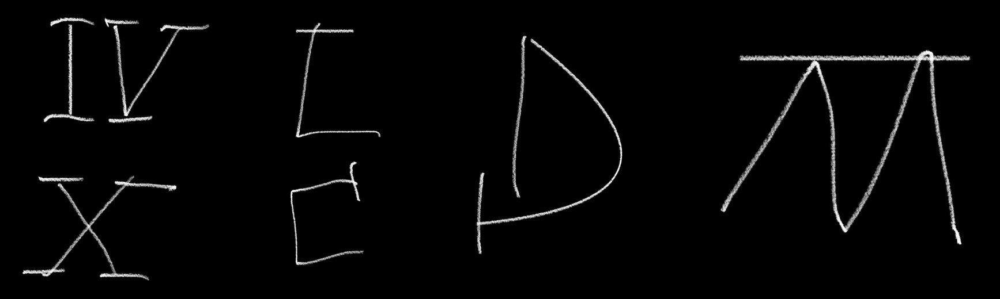

LaFleurStudio · 2026
JALOUSIA
Des chiffres romains néo-gothiques dessinés à la main. Deux polices : Jalousia Net, trait propre, et Jalousia Craie, à la craie. 4 graisses, de Centum à Quadringenti, chacune avec son italique.
Les graisses
De 100 à 400, en Net et en Craie, avec leurs italiques. Les noms comptent en latin : Centum, cent. Quadringenti, quatre cents.
Testeur
Clique et écris.
Deux familles à installer : « Jalousia Net » et « Jalousia Craie ». 8 styles chacune.
Caractères
Majuscules, minuscules, chiffres, ponctuation, symboles. Tous les accents d’Europe en alphabet latin. 320 caractères, accents combinants compris.
Comment on l'a faite
Dessinée de zéro, en Python. Chaque lettre est une suite de traits, tous épaissis pareil.
Au départ, des chiffres romains
Des chiffres romains néo-gothiques dessinés à la craie : I, V, X, L, C, D, M. Barres ondulées, crochets, pieds.

Trait par trait
On suit chaque trait sur le dessin, puis on l'épaissit régulièrement. Le C était trop large : il est devenu rond. La jambe gauche du M, on l'a prolongée jusqu'en bas.

Le reste avec les morceaux
Les autres lettres sont montées avec les pièces des dessins. Le W, c'est le M à l'envers. Les minuscules : mêmes pièces, à 60 % de la hauteur des capitales.
Net ou craie
Même dessin, deux polices. Jalousia Net : trait propre, rond, régulier. Jalousia Craie : le bord tremble, des petits trous dedans, de la poussière autour. Chaque lettre a son grain.
Les lettres se glissent
Un point sous la barre du T, un e sous la barre du V : les lettres se glissent les unes sous les autres, à bonne distance. Les barres de V et W, elles, touchent la lettre d'à côté.
4 graisses, noms latins
Un seul réglage : l'épaisseur du trait. L'espace entre les lettres et la place des accents grandissent un peu avec.
| Style | Poids | Épaisseur du trait |
|---|---|---|
| Centum | 100 | 22 |
| Ducenti | 200 | 34 |
| Trecenti | 300 | 46 |
| Quadringenti | 400 | 60 |
| Épaisseurs en unités (1000 par em). Hauteur des capitales : 700, des minuscules : 420. Fichiers de 160 à 200 Ko en Net, de 640 à 720 Ko en Craie. | ||
L'italique
Chaque graisse penchée à 12°, avec des minuscules plus manuscrites : le f descend sous la ligne, v, w, x et y s'arrondissent.
Télécharger
Usage personnel : gratuit. Projets perso, études, essais, maquettes.
Usage commercial : sur autorisation. Logo, client, produit vendu, pub, site d'entreprise… écris à info@lafleurstudio.ch. Selon le projet, c'est gratuit ou payant.
Revente, partage des fichiers et modification interdits sans accord. La licence couvre les deux polices. Texte complet : LICENCE.txt.
Installation sur un site web
@font-face { font-family: "Jalousia Craie"; font-weight: 300;
src: url(JalousiaCraie-Trecenti.woff2) format("woff2"); }
@font-face { font-family: "Jalousia Craie"; font-weight: 300;
font-style: italic;
src: url(JalousiaCraie-TrecentiItalic.woff2) format("woff2"); }
/* … une règle par style : Centum 100, Ducenti 200,
Trecenti 300, Quadringenti 400, et la même chose en italique ;
pareil pour "Jalousia Net" (fichiers JalousiaNet-…) */
/* Ponctuation des capitales (tirets, guillemets) */
.capitales { font-feature-settings: "case" 1; }